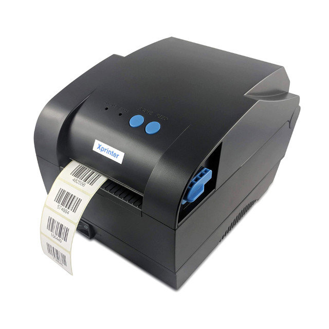
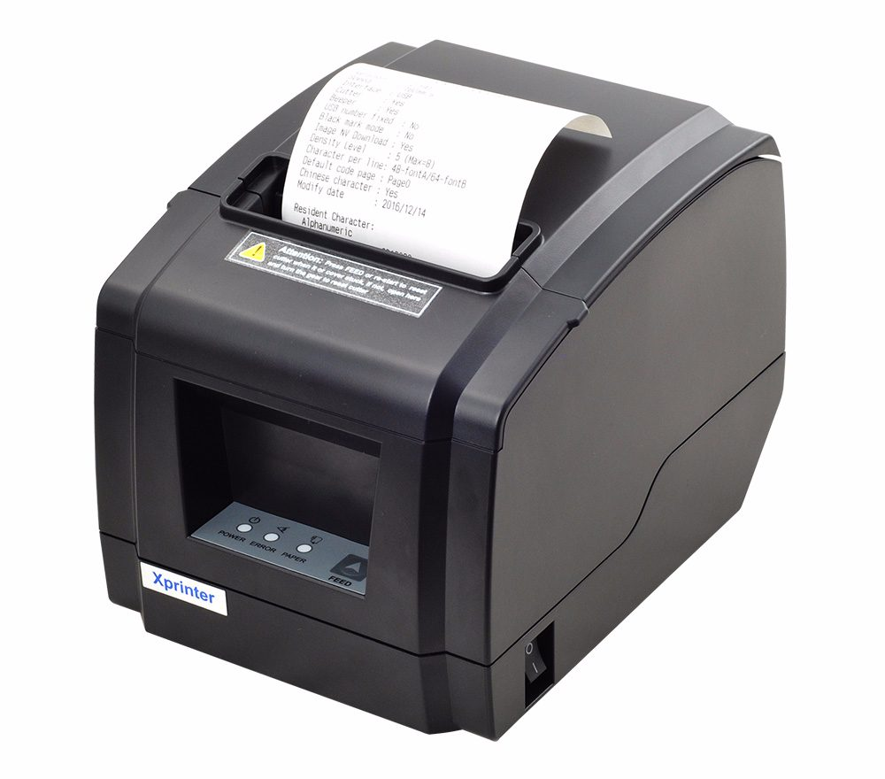
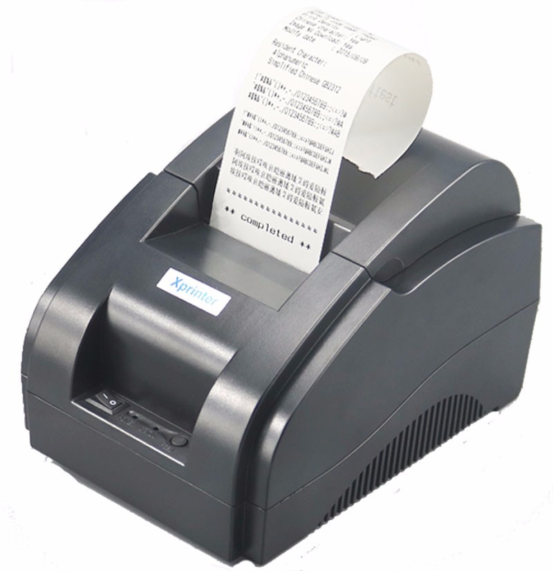

Савдо расталари
Керакли жиҳозлар:
- Компютерлар:
- Смартфонлар
- Принтерлар
- Wifi роутер
Стационал компютер ёки Нотебоок
Aсосан компютерлар дастурни бошқариб туриш ва кирим-чиқим хижжатлари буғалтерия ҳисоби ва база яратиш учун керак бўлади. Иложи борича нотебоок қойилгани мақул чунки унинг батарейкаси борлиги ва қувват самараси еса 6 соатга йетиши унинг қулайлик тарафларидан биридир.
Смартфонлар асосан таварни сотиш юбориш ва ўзгартиришлар киритиш, тавар база яратиш учун керак. Енг аввало штрих код орқали тавар базага киритиш имконияти бор. Смартфонлар Aндроид платформасида бўлиши керак. Aндроид версияси 4.0.3 Ice cream шундан баланд бўлиши керак
Принтерлар 3 хил бўлади
Aсосан принтерларимиздан ХP365Б модели принтеримиз штрих кодларни чоп етади яъни ёпишқоқ қоғозларга ҳам чоп етади. Бу принтеримиз лакал сет орқали ҳам ишлайди.
Кейимги принтерларимиз еса ХТП300П яъни унинг қулайлик таърафи сет орқали ҳам ишлайди ва у асосан катта доконларда ва фирмаларга қўйилади. Унинг қоғоз ўлчами 80 мм ташкил етади, у чекни қирқиб беради. Биз асосан шу принтерни тавсия қиламиз. Қуйидаги сурат шу принтернинг сурати:
Кейинги принтеримиз Хпринтер 58 мм пос принтери бўлиб бу принтернинг афзаллиги бу принтерга Терминалнинг қоғозини қўйиш мумкин. У асасан кичик чек чиқаради яъни 58 ммлик лекин чекни қирқиш имкониятига ега емас. Қуйидаги сурат Хпринтер 58 мм пос мадели принтернинг сурати:
Wifi роутер бу лакални сет яратиш учун керак бўлади. Унинг интернетга уланган ёки уланмаганлигининг фарқи ёқ. Лекин база интернетда бўлса унда керак бўлади.
Техник хизмат
Биз бу технологияларни ишлатиши учун ҳайдовчи(драйверлар) ўрнатиб берамиз!
Ишни бошлашдан аввал Хпринтер 80мм Драйверни юклаб олиш учун Бу йерни босинг
Драйверни юклаб олганимиздан кейин принтерни токга улаб усбни компютерга уланг !!!
Драйверни ўрнатиш қўлланмасини юклаш
Xp58 принтери ҳам Хp 80 принтери драйвери бир хил бўлади !!!
XP 58 принтер драйверини ўрнатиш қўлланмаси юклаш Doc файлни юклаш Pdf файлни юклаш
Кейинги принтер бу ХП365Б модели яъни Бар Cоде принтернинг драйверни юклаш учун Бу йерни босинг
XP365B модели яъни Бар Cоде принтернинг драйверни ўрнатиш қўлланмасини юклаш
Барчa принтерлар учун техник носозликни тўғирлаш қўлланмаси
Aгар дриверни ўрната олмасангиз !!!
TeamViewer дастурни юклаб олиб биз билан боғланинг !!!
TeamViewer дастурни ўрнатиш қўлланмаси
Дастур хизмати.
Aсосан дастурларимиз 3 хил варианти бор:
Мобил дастур
Имкониятлари
- Таварларни сотиш
- Таварни кирим қилиш
- Штрих кодни ўқиш
- Тавар база яратиш
- Харидорлар рўйхати
- Диллер рўйхати
- Чакана савдо режими
- Улгуржи савдо режими
- Интернет орқали ишлаш
- лакал сет орқали ишлаш
Сайт саҳифамиз
Имкониятлари
- Интернет орқали маълумотлар олиш
- Таварлар рўйхати
- Таварларни реклама қилиш
- Таварларни онлине сотиш
- Раста ҳақида маълумотлар
- Онлине тижорат
- Буғалтерия хисоби
- Лакалний сет орқали ишлаш
- Кирим-чиқим рўйхатини онлине бошқариш
Компютер дастур
Имкониятлари
- Тавар базани сақалаш
- Буғалтерия хисоби
- Маълумотлар омбори
- Товарларни таҳрирлаш
- Електрон назорат
- Кирим-чиқим рўйхати
- Қарздорлар рўйхати
- Таварни кирим қилиш
- Диллерлар назорати
- Харидорлар назорати
Дастурнинг ишлаши ҳақида
Сотиш жараёни:
Ҳар бир ходим қол телефомида сотиш мумкин, Улар аввал Профит модел дастурига кириб сотади ва сотилган ҳар бир таварнинг нархи, сони, умумий сумма ва вақти ёзиб борилади сўнг чекни печатга берилади печатни хоҳлаган фарматда чиқариш имконияти бор чекдан 2 та чек чиқади уларнинг бир харидорга иккинчиси еса ходимнинг ўзида қолади. бу дастур имкониятлари чексиз бўлиб кунлик хиобот ва ойлик хисобот ва ҳатто йиллик хисоботларни ўзида хисоблаб боради.У кирим ва чиқим хужжатларни ехcелларда сақлаб қўяди, унда савдо қилиш жуда осон бўлиб пластик карта орқали ва пул ўтказиш ян нақд пул орқали савдоқилса бўлади, у суммаларни аралаштириб юбормайди ҳар бирсини алоҳида сақлаб қолади яъни пластик карта орқали савдо қилинган бўлса пластик картанинг суммасини бошқа ехcел фарматга ўтказиб сақлаб қўяди, унда қарздорлар рўйхатини ҳам тузса бўлади у дастур қарзнинг қандай шаклда қайтарилганини ҳам киритиб бориш имконияти бор яъни нақдми,пластик карта орқалими ёки банкдан пул ўтказишми барчаси ёзиб боради. Дастур орқали фойда ва зарарни ўзи ҳисоблаб боради. Дастурнинг яна бир имконияти таварларни штрих кодлар орқали кирим қилиш имконияти бор.
Маълумотлар
Wifi нима?
Wi-Fi(Wireless Fidelity) — инглиз тили сўзларидан ташкил топган бўлиб, «симсиз вафолик» маъносини англатади. Wи-Фи технологияси ҳозирги кунга келиб компютер ва смартфонлар оламида енг перспектив компютер тармоқ тармоқларидан бири ҳисобланади. Wи-Фи технологияси деб рақамли маълумотларни радиоканаллар орқали жўнатиш турларидан биридир. Ушбу технология яратилишида аввало корпоратив фойдаланувчилар учун мўлжалланган бўлиб, кабелли тармоқни ўрнини егаллаши башорат қилинганди. Бизга маълумки албатта кабелли тармоқли компютер тармоғини яратиш учун бир неча минг кабел тармоғини қўлда ўрнатиш ҳамда махсус тармоқ топологиясини ўрнатиш талаб қилинишини ҳамма билишлиги аниқ. Wи-Фи — радиочастоталарнинг қисқартирилган бошқарув частоталарида ишловчи симсиз маълумот алмашиниш стандартлаштирилган технологияси. Одатда Wи-Фи тармоғи орқали WLAN(Wireless Local Area Network — Симсиз Локал Тармоқ) тармоқлар яратилади. Ушбу тармоқда албатта юқори радиотўлқинлар орқали алоқа ташкил қилинувчи ҳамда маълумот алмашинишини кўриш мумкин бўлади. Бу тизим кабелли тармоқни кенгайиши ёки унга алтернатив сифатида битта офис, бутун бир бино ёки бир майдон территориясида ишлатилади. Wи-Фи технологияси минглаб кабел тармоғини тушириш каби маблағли жараён учун маблағларингизни тежаш билан бирга, ўрнатишни оддийлиги еса мураккаб техник ўрнатиш жараёнларига вақтни иқтисод қилинишини бу тармоқни бошқа тармоқлардан устун қилиб қўяди.
Internet нима?
Интернет — дунё бўйлаб жойлашган ва ягона тармоққа бирлаштирилган минглаб компютер тармоқларининг мажмуидир. Интернетда ахборот алмашиш стандарт қоидалар асосида амалга оширилади.Интернет [лот. интер – аро ва нет (wорк) – тармоқ] — катта (глобал) ва кичик (локал) компютер тармоқларини ўзаро боғловчи бутунжаҳон компютер тизими. Унда географик ўрни, замон ва макондан қатъий назар, айрим компютер ва майда тармоқлар ўзаро ҳамкорликда глобал информация инфратузилмасини ташкил етади. Қайдномалар тизими билан бошқариладиган барча ҳосила тармоқлар ҳамкорликда истеъмолчиларга маълумотни сақлаш, еълон қилиш, жўнатиш, қабул қилиш, излаш ва маълум бўлган барча вариантлар (матн, товуш, видеотасвир, фотосурат, графика, мусиқа тарзида ва б. кўринишлар) да ахборот алмашинишга имкон яратади.Интернет барча анъанавий информация тизимлари – телекоммуникация, телерадиоешиттириш, информацияларни халқаро миқёсда фаол алмаштириш ва ҳ. к.нинг технологик имкониятларни уйғунлаштириб қўлланганлиги учун у бир неча вазифани – информация ва билимлар манбаи; оммавий ахборот воситаси, инсоният фаолиятининг барча соҳалари (шу жумладан, таълим-тар-бия, сиёсий, ижтимоий, иқтисодий, маданий, сайёҳлик ва ҳ. к.) га таал-луқли информация хизматлари тизими; истиқболли бозор ва миллий ком-панияларнинг халқаро информация майдони ва жаҳон бозорига енг тежамли ва тезкор усулда қўшилиш имко-нини берадиган восита вазифасини ўтайди.
Бош саҳифага қайтиш teda.uz